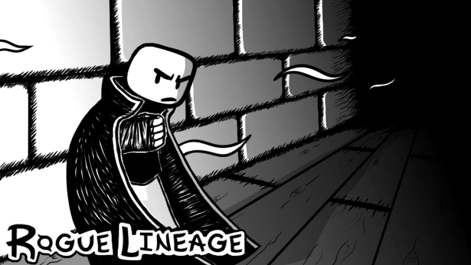

Sobre a wiki
O site Rogue lineage wiki BR é um projeto dedicado a ajudar/auxiliar a comunidade brasileira de Rogue lineage, com informações completas sobre o jogo e dicas para melhorar sua jogabilidade no jogo. Estamos em constante desenvolvimento e aprendizado, buscando oferecer a melhor experiência para nossos usuários. Se você encontrar algum erro ou tiver sugestões, por favor, clique em "Ajuda" e nos avise no nosso Discord. Sua colaboração é fundamental para que o Wiki Rogue lineage BR continue crescendo e se tornando uma referência para a comunidade!
